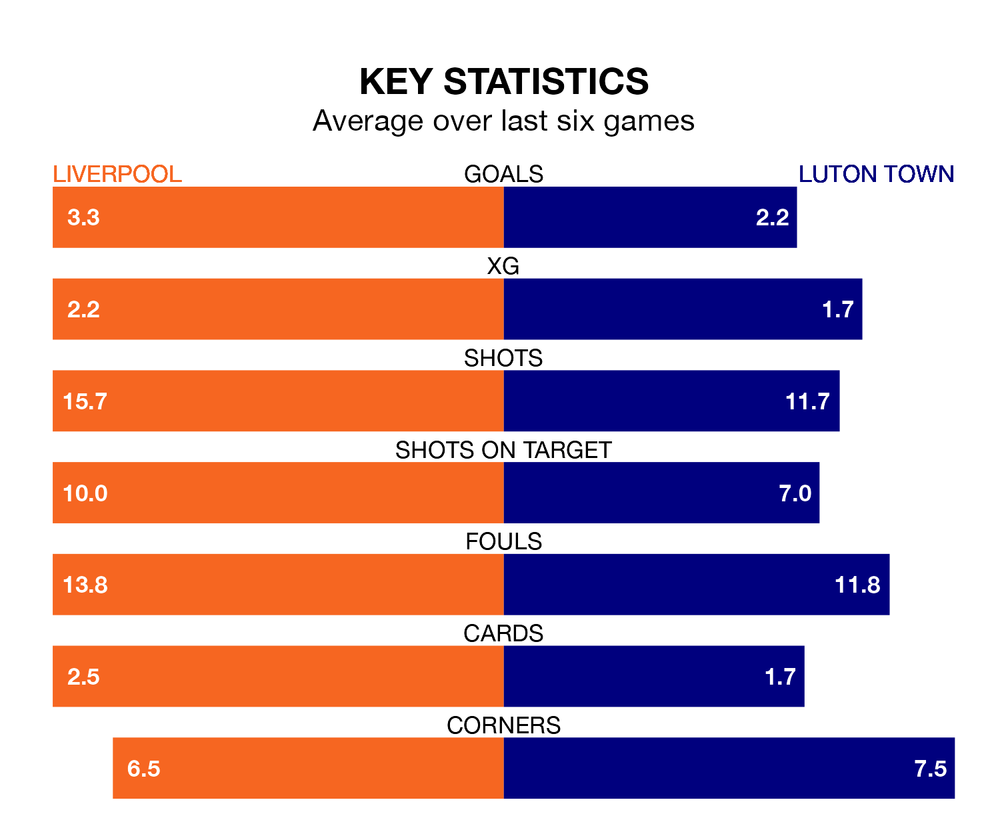

Mid-season relegation candidates Luton Town face a challenge away against high-flying Liverpool at Anfield on Wednesday.
Luton Town are 18th in the Premier League table, and have picked up five wins and five draws in their 24 games to date.
The Reds, meanwhile, are top of the standings with 57 points, having won 17 and drawn six of their first 25 matches.
With 59 goals in 25 games so far this season, Liverpool are the league's highest scorers with 2.4 goals per game. And they are conceding fewer than average, letting in 24 goals at a rate of 1.0 per game.
Luton, meanwhile, are below average scorers, with 1.4 goals per game, compared to a league average of 1.6. They have conceded 2.0 goals per game.
In Mohamed Salah, the Reds have one of the league's sharpest shooters so far this season. He has notched 15 goals in 21 appearances, to sit second in the scoring charts.
His goal rate of one every 119 minutes is slightly quicker than that of Elijah Adebayo, Town's top scorer with a goal every 129 minutes, and a total of nine goals in 23 games.
The hosts are in fantastic form in the Premier League, with five wins and one loss from their last six games.
With a win and two draws over that period, the Hatters' form is much worse – they have taken five points from 18, compared to Liverpool's 15.
Liverpool's last match was on Saturday, a 4-1 win against Brentford, with Alexis Mac Allister, Cody Gakpo, Darwin Núñez and Salah getting the goals for the Reds.
Luton lost 2-1 against Manchester United last time out, on Sunday, with Carlton Morris on the scoresheet.
Updated: 12:18 (UTC), 19/02/24